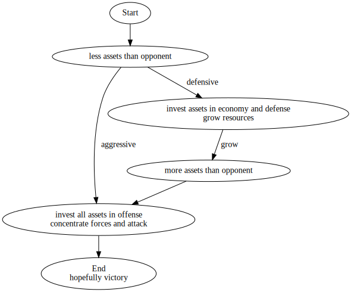

Strategy is a big picture plan to achieve goals. It differs from tactics mostly by scale.
Strategy is implemented using tactics.
Thinking about "states" or "phases" is a core part of strategies. A strategy tries to achieve particular states and transition between them in ways that serve the goal of the strategy.
It's a useful tool that transfers well into any other area with goals and strategies.
If a strategy is "cheese" and ends up in a state space dead end, outside of games, it's a bad or malicious strategy. Recognizing and preventing their use would be good.
One tool to illustrate statespace is graphviz' dot. A simple strategy map might look like this:
The only difference is what constitutes assets and how victory is defined, but other than this applies to an RTS game just the same as it does to a e.g. business plan.
To spell it out, a defensive business strategy would be to aim for profitability first, then use the profits to grow the business and an agressive strategy would be to take out loans, price the product low to acquire a market share, then raise prices and recoup the costs from the bigger market.
The problem for agressive strategies is the same too: if it doesn't work, assets have been spent, there is no way to acquire more in time and the result is a loss:
Defeat for the strategy player, bankruptcy for the buisness.
I think this is very useful in explaining how "real time strategy" games become "real time tactics" games when the "meta" strategy has been figured out. I don't want to play tactics games though, I want to play strategy games.
I strongly recommend Day9s videos on basic starcraft strategy if it's not clear what I mean by this. To sum them up, the matchups of the three factions have shown over time to favor different selections from the big roster of units each faction has. Transfered to chess, it would mean that different pieces are more or less valuable and preferable depending on who you're playing against.
The issue is, once the specific selection, the "meta" is known, everything else depends on execution and tactics and sometimes just luck.
This can still be fun, but it's not the same thrill you get when you're figuring out what works and why.
The choices available in a stellaris game are pretty limited. Settling new systems and planets is almost always a good idea, since they grow population which gathers resources and accelerates the growth curve.
Investing all economy into research has low risk, since early game agression is difficult, and the exponential power growth of research overpowers pays dividends soon enough and can overpower every other play style.
The rock paper scissors in weapon choices is cumbersome. There is little helpful information on picking the correct weapon against an enemy. There are little advantages to focusing on a particular tech. Research being random makes it difficult to invest into a particular route, bigger is usually better as well.
Differences that do matter, significant speed, evasion or range, are very difficult to achieve and have a comparatively low impact or "dividends".
...which makes it not interesting in the long run. Or at least "equally" interesting to existing products in the market, but with a smaller community, smaller network effect, less fair games because of smaller pool for match making, etc..
Thus it's not surprising me to see AoE fairly low in concurrent players. It was probably successful enough via sales, but it's far away from the longevity of starcraft, which was probably the goal.